I am joining a stealth startup as a Research Scientist, and currently a fifth-year PhD student at Department of Computer Science, University of Maryland, advised by Jia-Bin Huang and David Jacobs. I'm also visiting Angjoo Kanazawa at Berkeley AI Research. I received my Master's degree from Carnegie Mellon University and Bachelor's degrees from Renmin University of China. Since then I've had pleasure to work with Jun-Yan Zhu at CMU, Ming-Yu Liu at NVIDIA Research, and Devi Parikh at Facebook AI Research. My research is supported by NVIDIA Graduate Fellowship.
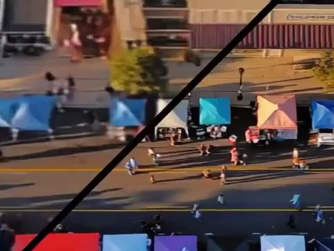
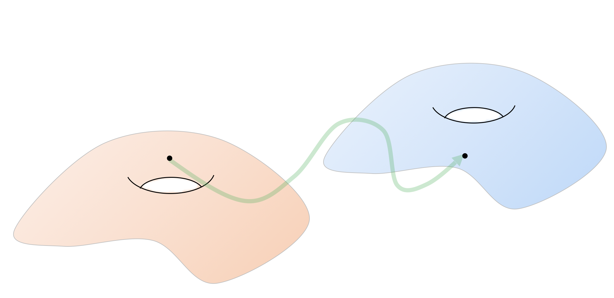
Rethinking Score Distillation as a Bridge Between Image Distributions
David McAllister*, Songwei Ge*, Jia-Bin Huang, David W. Jacobs, Alexei A. Efros,
Aleksander Holynski, Angjoo Kanazawa
In the Annual Conference on Neural Information Processing Systems (NeurIPS), 2024
[arXiv] [Code] [Project Page]
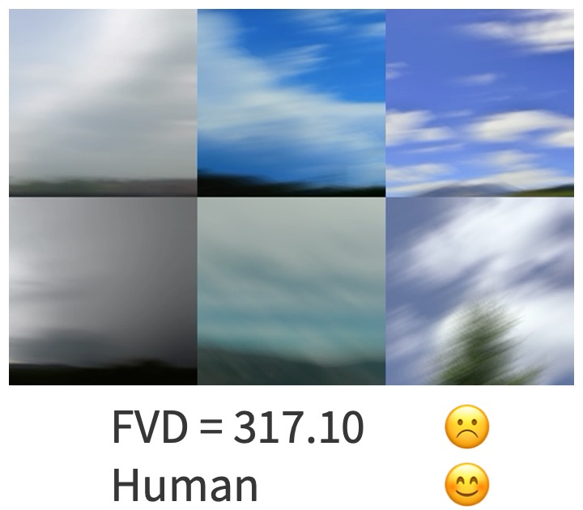
On the Content Bias in Fréchet Video Distance
Songwei Ge, Aniruddha Mahapatra, Gaurav Parmar, Jun-Yan Zhu, Jia-Bin Huang
In the Computer Vision and Pattern Recognition (CVPR), 2024
[arXiv] [Code] [Project Page] (Download: pip install cd-fvd)
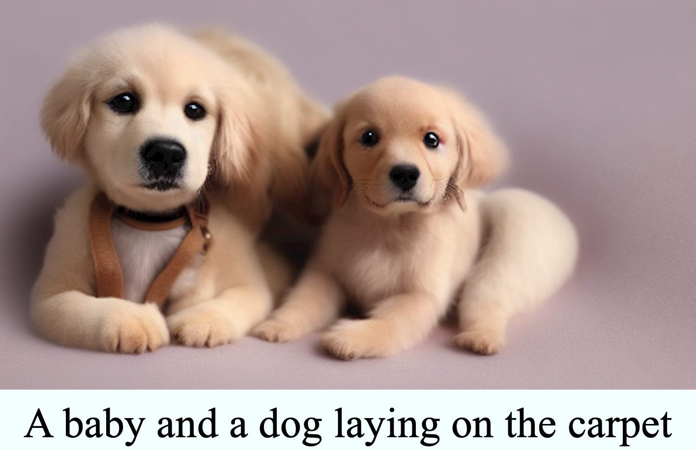
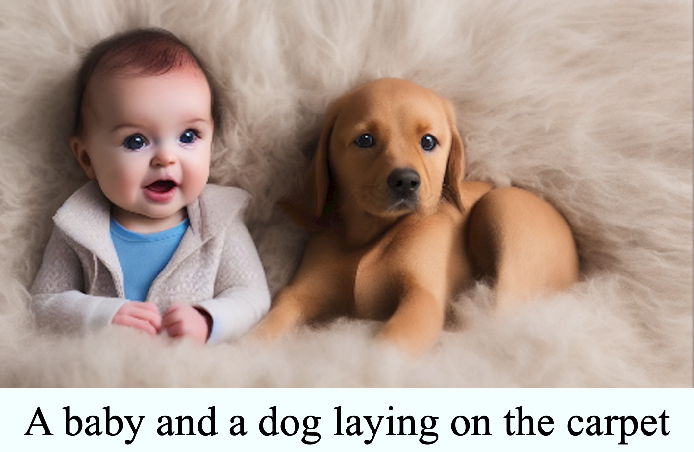
Grounded Text-to-Image Synthesis with Attention Refocusing
Quynh Phung, Songwei Ge, Jia-Bin Huang
In the Computer Vision and Pattern Recognition (CVPR), 2024
[arXiv] [Code] [Project Page]
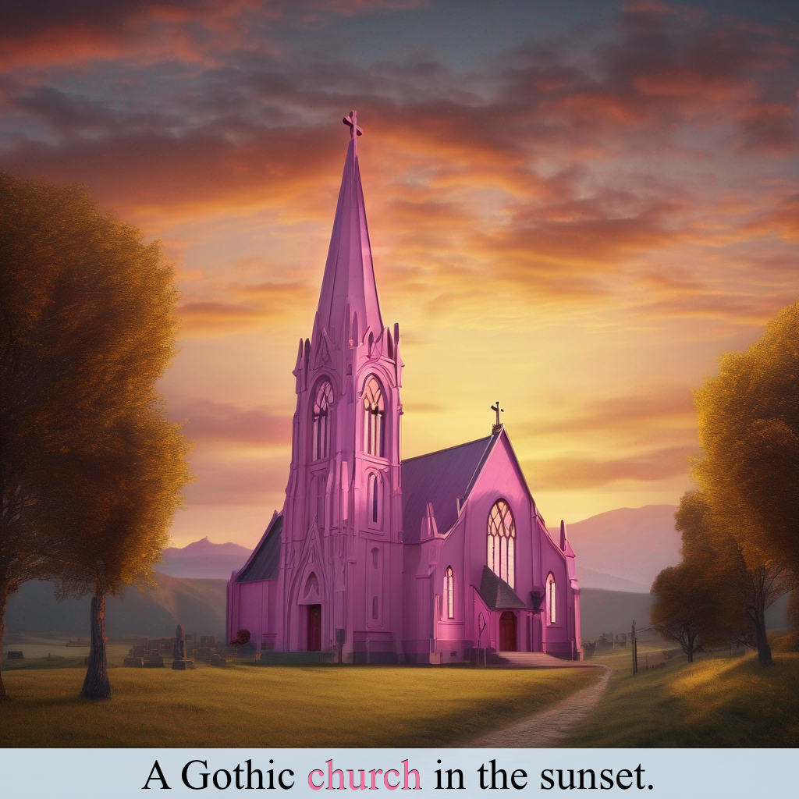
Expressive Text-to-Image Generation with Rich Text
Songwei Ge, Taesung Park, Jun-Yan Zhu, Jia-Bin Huang
In the International Conference on Computer Vision (ICCV), 2023
[arXiv] [Code] [Video] [Demo] [Project Page]
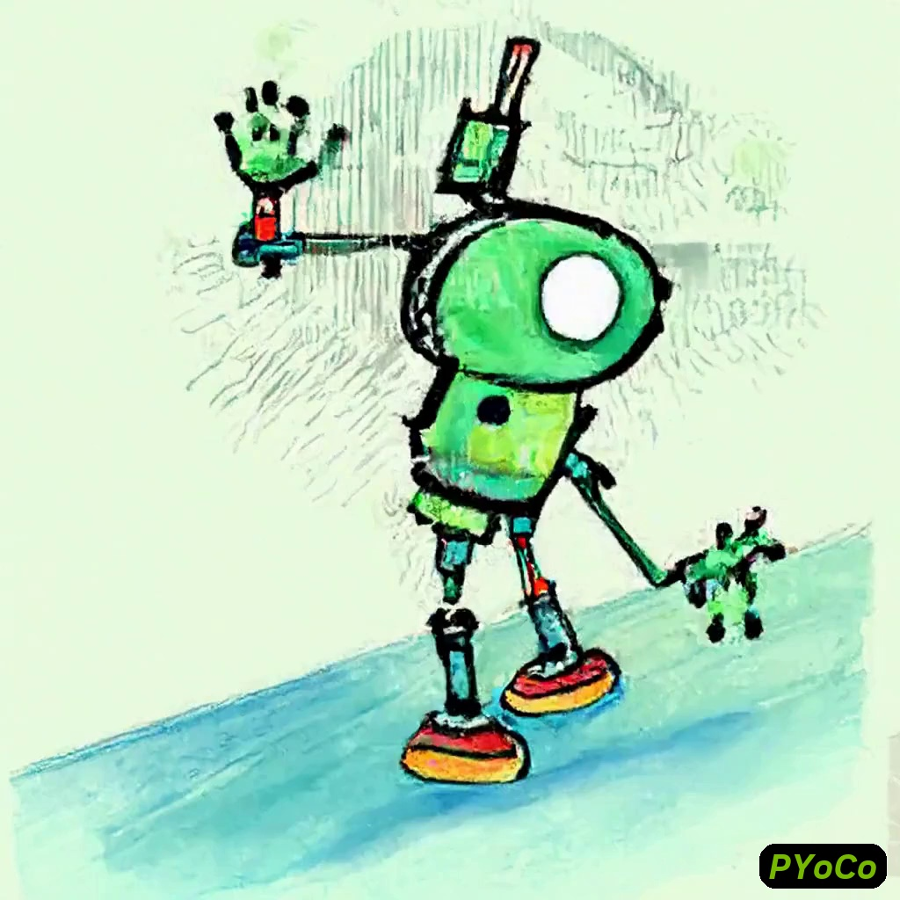
Preserve Your Own Correlation: A Noise Prior for Video Diffusion Models
Songwei Ge, Seungjun Nah, Ming-Yu Liu, Tyler Poon, Andrew Tao, Bryan Catanzaro, David Jacobs, Jia-Bin Huang, Ming-Yu Liu, Yogesh Balaji
In the International Conference on Computer Vision (ICCV), 2023
[arXiv] [Project Page]
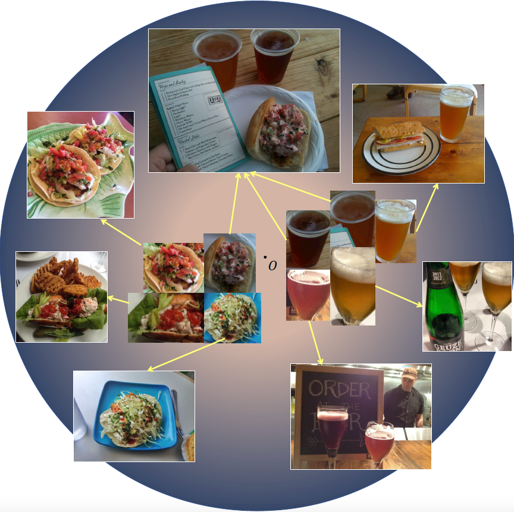
Hyperbolic Contrastive Learning for Visual Representations beyond Objects
Songwei Ge*, Shlok Mishra*, Simon Kornblith, Chun-Liang Li, David Jacobs
In the Thirty-fifth Annual Computer Vision and Pattern Recognition (CVPR), 2023
[arXiv] [Code]
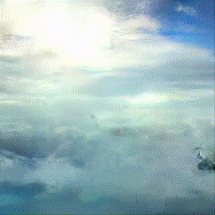
Long Video Generation with Time-Agnostic VQGAN and Time-Sensitive Transformer
Songwei Ge, Thomas Hayes, Harry Yang, Xi Yin, Guan Pang, David Jacobs, Jia-Bin Huang, Devi Parikh
In the European Conference on Computer Vision (ECCV), 2022
[arXiv] [Code] [Video] [Project Page]
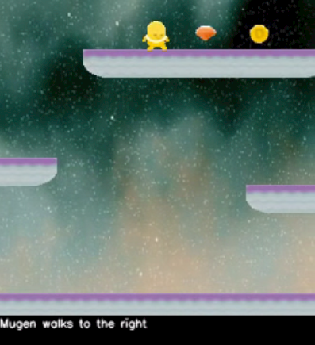
MUGEN: A Playground for Video-Audio-Text Multimodal Understanding and GENeration
Thomas Hayes, Songyang Zhang, Xi Yin, Guan Pang, Sasha Sheng, Harry Yang, Songwei Ge, Isabelle Hu, Devi Parikh
In the European Conference on Computer Vision (ECCV), 2022
[arXiv] [Code] [Dataset] [Project Page]
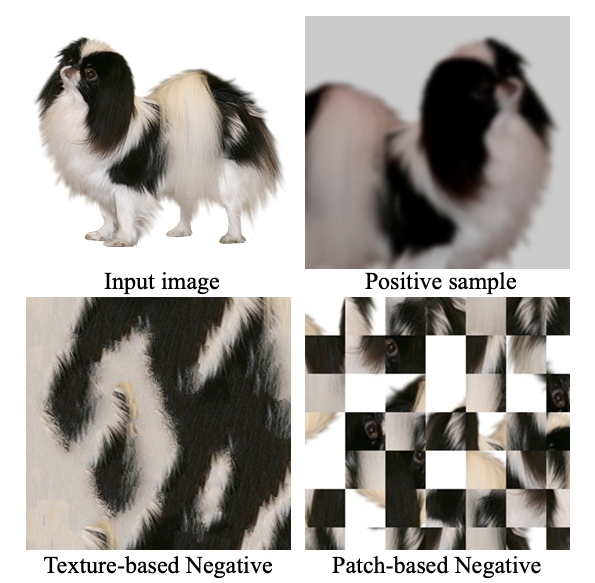
Robust Contrastive Learning Using Negative Samples with Diminished Semantics
Songwei Ge, Shlok Mishra, Haohan Wang, Chun-Liang Li, David Jacobs
In the Thirty-fifth Annual Conference on Neural Information Processing Systems (NeurIPS), 2021
[arXiv] [Code and Dataset]
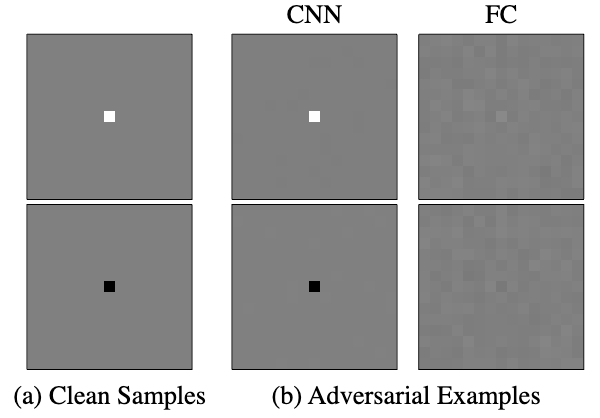
Shift Invariance Can Reduce Adversarial Robustness
Songwei Ge*, Vasu Singla*, Ronen Basri, David Jacobs
In the ICLR Workshop on Security and Safety in Machine Learning Systems, 2021
In the Thirty-fifth Annual Conference on Neural Information Processing Systems (NeurIPS), 2021
[arXiv] [Code]
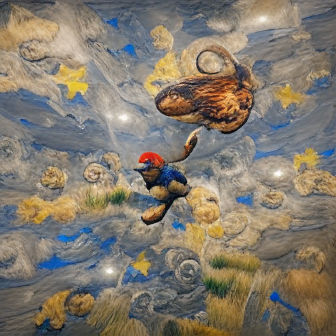
Visual Conceptual Blending with Large-scale Language and Vision Models
Songwei Ge and Devi Parikh
In the International Conference on Computational Creativity (ICCC), 2021 (oral)
[arXiv]
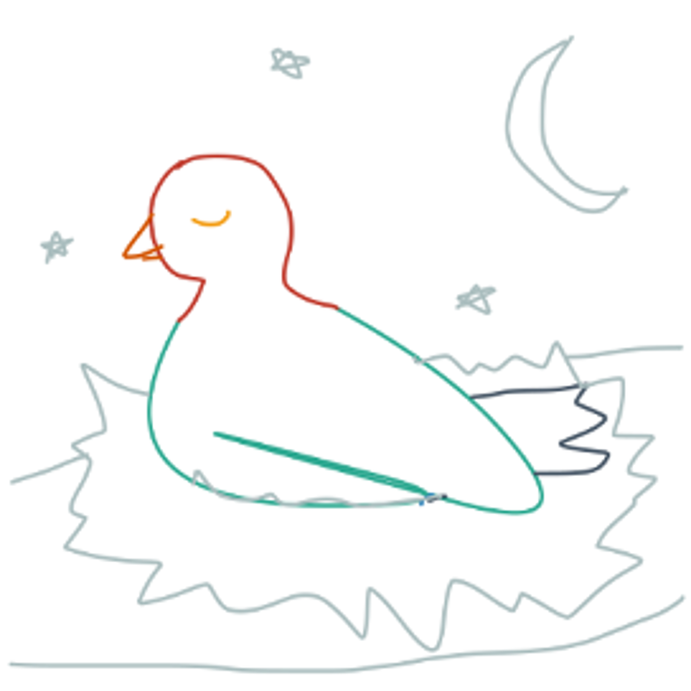
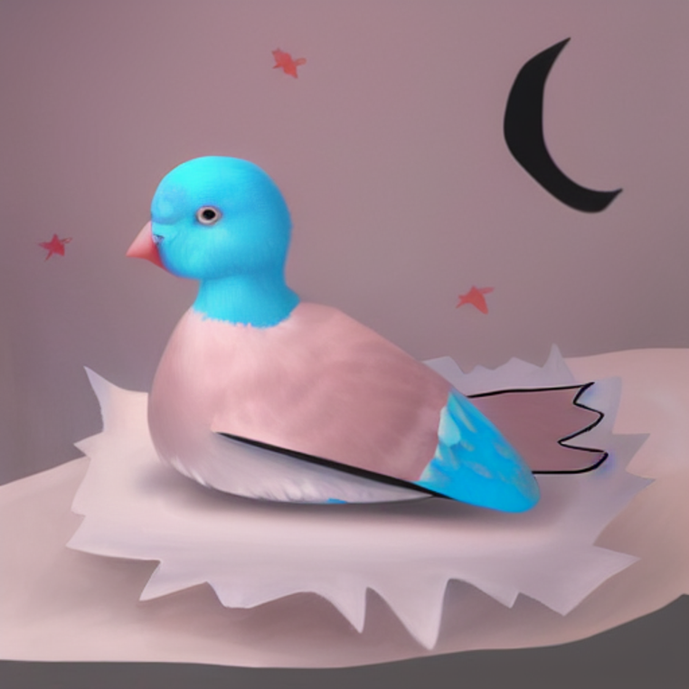
Creative Sketch Generation
Songwei Ge, Vedanuj Goswami, Larry Zitnick, Devi Parikh
In the NeurIPS Workshop on Machine Learning for Creativity and Design, 2020 (oral)
In the International Conference on Learning Representations (ICLR), 2021
[arXiv] [Demo] [Code] [Dataset] [Project Page]
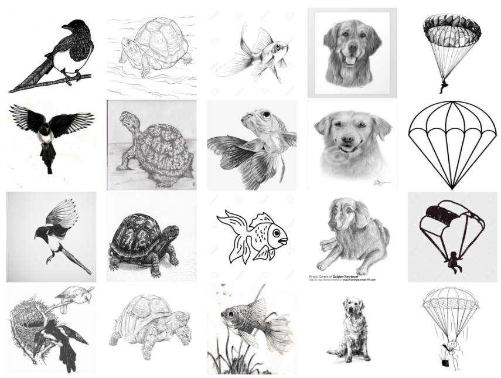
Learning Robust Global Representations by Penalizing Local Predictive Power
Haohan Wang, Songwei Ge, Eric P. Xing, Zachary C. Lipton
In Thirty-third Conference on Neural Information Processing Systems (NeurIPS), 2019
[arXiv] [Code] [Dataset]